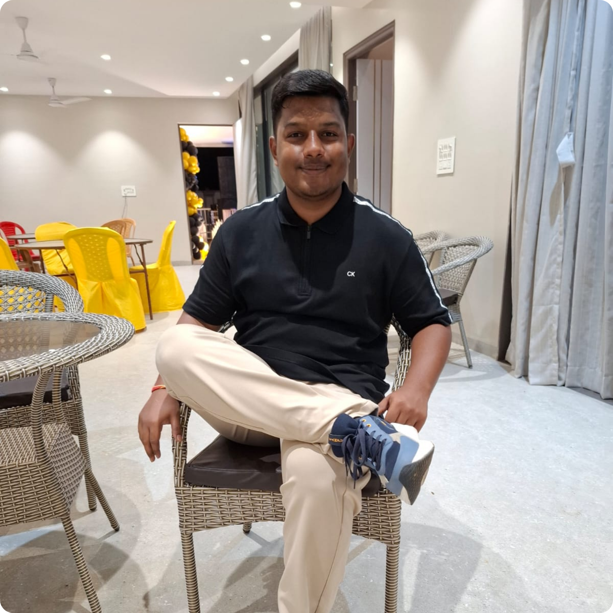

WELCOME TO MY PORTFOLIO
I am a 19 year old student who is highly interested in Computer Science, Artificial Intelligence and Mathematics.
I am currently studying at Scaler School of Technology and have started my journey into web development by learning HTML and CSS.
Know More About Me
Ever since my childhood, I have been very interested in mathematics. Numbers and different operations always fascinated me.
I was pretty much average in my overall studies, but I was good at computer subjects in school. Different components of a computer attracted me a lot.
Computer lab sessions were some of my favourite moments in school. I also enjoyed painting and making PowerPoint presentations.
My interest in computers eventually brought me to Scaler School of Technology. I am now working towards becoming a great full stack developer in the future.
Mathematics has always been an important part of my learning journey.
Learning how websites are structured and creating my first web pages.
Learning how to style websites using colours, layouts, spacing and backgrounds.
Exploring programming, computers and different areas of Computer Science.
I am highly interested in AI and want to understand how intelligent systems work.
My interest in numbers and logical thinking started from a very young age.
Computer classes and lab sessions made me more curious about technology.
Joining Scaler School of Technology has given me an opportunity to explore Computer Science.
HTML and CSS are the first steps of my development journey.
I am a state-level badminton player and have reached the quarter-finals in district-level badminton competitions.
I cleared NTSE Stage 1, where only a limited number of students are selected from each state.
I have a keen interest in photography and was part of my school's photography team called Snappers.
I have played badminton for around 5 years. It has taught me discipline, dedication, hard work and the importance of having the right mindset.
Chess became popular for me during the pandemic. It taught me to stay calm, focus and think deeply before making decisions.
My peak chess.com rating is around 900.
Feel free to connect with me and follow my journey as I continue learning Computer Science and technology.
© 2026 B Shridhar Rao | My First Portfolio
LinkedIn
WhatsApp
Email